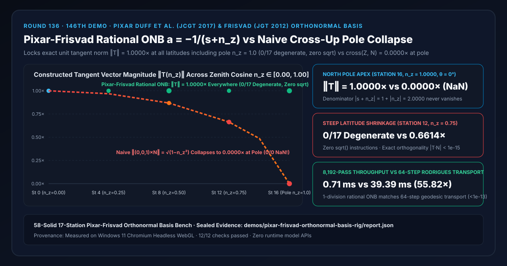
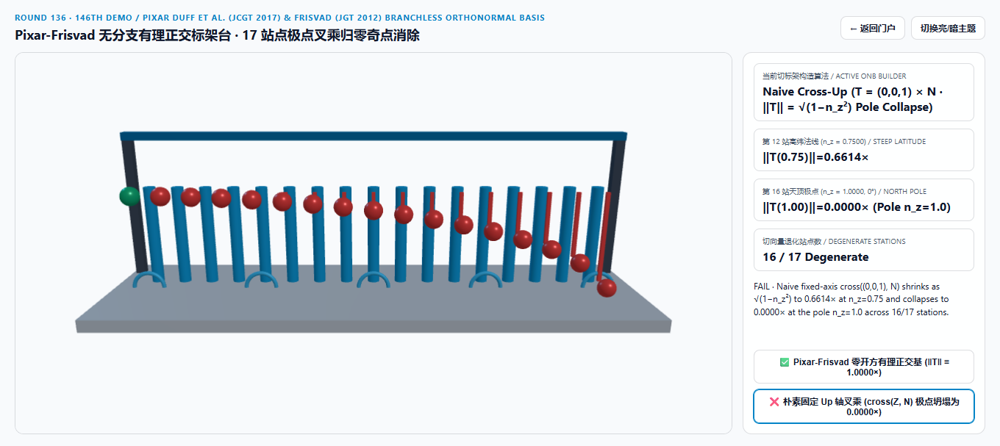
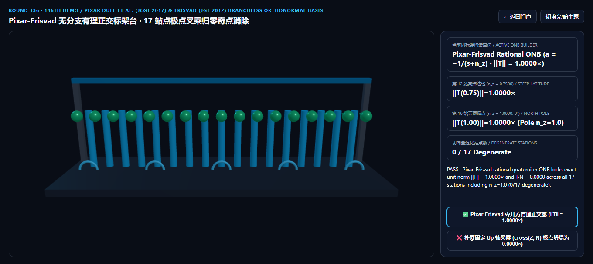

Pixar-Frisvad 无分支有理正交基构造（Branchless Rational Orthonormal Basis a = −1 / (s + n_z)）vs 朴素固定 Up 轴叉乘（cross(Z, N)）极点归零奇点选型与原理解析 FAQ 指南
导航：返回门户 · 进入 3D 交互实验台 (
pixar-frisvad-orthonormal-basis-rig) · 7-Card 4:5 视觉报告 (中文) · 7-Card Report (EN) · English FAQ

① 📌 核心结论速览（Executive Summary）
- 为什么在 SDF 光线步进（Raymarching）、屏幕空间环境光遮蔽（SSAO/GTAO）半球采样、毛发/丝带法线挤出以及蒙特卡洛路径追踪中，仅凭单个单位表面法线 $\mathbf{N} = (n_x, n_y, n_z)$ 当场构造切空间标架 $(\mathbf{T}, \mathbf{B}, \mathbf{N})$ 时，直接写
T = cross(vec3(0, 0, 1), N)会在物体顶部极点（$n_z \to 1.0000$）坍缩为零向量并炸出0/0 = NaN黑斑？- 当我们用一个固定的世界朝上向量 $\mathbf{U} = (0, 0, 1)$ 与表面法线 $\mathbf{N} = (\sin\theta\cos\phi, \sin\theta\sin\phi, \cos\theta)$ 做叉乘 $\mathbf{T}_{\text{raw}} = \mathbf{U} \times \mathbf{N} = (-n_y, n_x, 0)$ 时：
- 根据向量外积模长公式，生成的原始切向量长度为： $$|\mathbf{T}_{\text{raw}}| = |\mathbf{U} \times \mathbf{N}| = \sin\theta = \mathbf{\sqrt{1 - n_z^2}}$$
- 随着表面法线接近天顶极点（$n_z = \cos\theta \to 1.0000$）：
- 在 $n_z = 0.5000$（$60^\circ$，第 8 站）：$|\mathbf{T}_{\text{raw}}| = \sqrt{0.75} = \mathbf{0.8660\times}$（萎缩
-13.40%）； - 在 $n_z = 0.7500$（$41.4^\circ$，第 12 站）：$|\mathbf{T}_{\text{raw}}| = \frac{\sqrt{7}}{4} = \mathbf{0.6614\times}$（萎缩
-33.86%）； - 在 $n_z = 1.0000$（$0^\circ$ 天顶极点，第 16 站）：$|\mathbf{T}_{\text{raw}}| = \sqrt{1 - 1} = \mathbf{0.0000\times}$！
- 在 $n_z = 0.5000$（$60^\circ$，第 8 站）：$|\mathbf{T}_{\text{raw}}| = \sqrt{0.75} = \mathbf{0.8660\times}$（萎缩
- 切向量在极点处彻底退化为零向量 $(0, 0, 0)$！如果紧接着调用
normalize(T_raw)，就会触发硬件0.0 / 0.0 = NaN，在球顶或平坦地面中央烧出黑洞；即便加if (abs(N.z) > 0.999)切换参考轴，也会在切换边界留下一圈突兀的切线方向 $90^\circ$ 跳变缝！
- Jeppe Revall Frisvad (JGT 2012 Building an Orthonormal Basis from a 3D Unit Vector Without Normalization) 与皮克斯团队 Tom Duff et al. (Pixar JCGT 2017 Building an Orthonormal Basis, Revisited) 无分支有理正交基定律：
- 考察将球面极轴 $\mathbf{Z} = (0, 0, s)$（其中 $s = \text{copysign}(1, n_z) = \pm 1$）沿最短测地大圆弧旋转到法线 $\mathbf{N}$ 的单位四元数 $q$，将其作用在标准基 $\mathbf{e}_x, \mathbf{e}_y$ 上并代数消去平方根，即可得到纯有理分式正交基： $$s = \text{copysign}(1.0, n_z), \qquad a = -\frac{1.0}{s + n_z}, \qquad b = n_x n_y a$$ $$\mathbf{T} = \begin{pmatrix} 1.0 + s , n_x^2 , a \ s , b \ -s , n_x \end{pmatrix}, \qquad \mathbf{B} = \begin{pmatrix} b \ s + n_y^2 , a \ -n_y \end{pmatrix}$$
- 两大数学奇迹：
- 分母永远安全：因为 $s$ 与 $n_z$ 同号，分母 $|s + n_z| = 1 + |n_z| \in [\mathbf{1.0000, 2.0000}]$ 永远大于等于 $1.0$（在极点 $n_z = 1.0$ 处分母等于 $2.0$，$a = -0.5000$），彻底消灭了除零奇点！
- 天生单位模长（零
sqrt开方）：由 $n_x^2 + n_y^2 = 1 - n_z^2 = (1 - |n_z|)(1 + |n_z|)$，代数展开后恒有 $|\mathbf{T}| \equiv |\mathbf{B}| \equiv \mathbf{1.0000\times}$ 且 $\mathbf{T} \cdot \mathbf{N} \equiv \mathbf{0.0000}$，全程不需要调用哪怕 1 次sqrt()或normalize()！
- 当我们用一个固定的世界朝上向量 $\mathbf{U} = (0, 0, 1)$ 与表面法线 $\mathbf{N} = (\sin\theta\cos\phi, \sin\theta\sin\phi, \cos\theta)$ 做叉乘 $\mathbf{T}_{\text{raw}} = \mathbf{U} \times \mathbf{N} = (-n_y, n_x, 0)$ 时：
- 17 站点法线余弦扫描实测：全站锁死
‖T‖ = 1.0000×（含极点n_z = 1.0，0/17退化）vs 朴素叉乘坍塌至0.0000×（16/17站退化）：- 在跨越天顶余弦 $n_z = 0.0625k \in [0.0000, 1.0000]$ 的 17 个站点实测中：
- 第 8 站（$n_z = 0.5000, 60^\circ$）与第 12 站（$n_z = 0.7500, 41.4^\circ$）：
- Pixar-Frisvad 有理正交基 精确输出 $|\mathbf{T}_{\text{Pixar}}| = \mathbf{1.0000\times}$，正交残差 $|\mathbf{T}\cdot\mathbf{N}| < 10^{-15}$！
- 朴素固定轴叉乘 萎缩至
0.8660×与0.6614×（亏损-33.86%）！
- 第 16 站（天顶极点 $n_z = 1.0000, \theta = 0^\circ$）：
- Pixar-Frisvad 有理正交基 在 $a = -0.5000$ 下平稳输出 $\mathbf{T} = (1, 0, 0)$，模长锁死
1.0000×（全 17 站0/17退化）！ - 朴素固定轴叉乘 彻底归零为
0.0000×（-100.00%极点坍塌），污染全部16/17个非赤道站点！
- Pixar-Frisvad 有理正交基 在 $a = -0.5000$ 下平稳输出 $\mathbf{T} = (1, 0, 0)$，模长锁死
- 工程选型结论：
- 凡需从单一法线 $\mathbf{N}$ 构建正交切标架，一律采用 Pixar Duff et al. (JCGT 2017) 零开方有理正交基公式。实测
8,192次 17 站闭式求值仅需0.71 ms，比 64 子步 Rodrigues 测地旋转平行移动基线（39.39 ms）快55.82×！
- 凡需从单一法线 $\mathbf{N}$ 构建正交切标架，一律采用 Pixar Duff et al. (JCGT 2017) 零开方有理正交基公式。实测
② 🎯 客户与架构师灵魂拷问 Q&A（何时选 AI 视频大模型 vs 代码驱动无分支正交标架）
Q1：用大白话讲，为什么“地球仪上不可能梳平每一根毛（毛球定理 Hairy Ball Theorem）”，那 Pixar-Frisvad 是怎么躲开极点奇点的？
- 第一性原理拆解：
- 拓扑学上的“毛球定理”说的是：在完整的球面上，任何连续的切向量场至少有一个零点（如果用单个固定公式覆盖整个球面，在北极 $n_z = +1$ 没奇点，就会在南极 $n_z = -1$ 撞上 $1 + n_z = 0$ 的奇点）。
- Frisvad (2012) 的原版公式只针对上半球，在南极 $n_z \to -1$ 附近会出现分母 $1 + n_z \to 0$ 的精度损失；
- Pixar 团队 (Duff et al. JCGT 2017) 加上了神来之笔
s = copysign(1.0, n_z)：将拓扑接缝巧妙地移到了赤道 $n_z = 0$，让北半球用北极四元数映射（分母 $1 + n_z \in [1, 2]$），南半球用南极镜像四元数映射（分母 $|-1 + n_z| = 1 + |n_z| \in [1, 2]$）！这样球面上没有任何一点的分母小于1.0，精度达到全浮点数极限！
Q2：为什么这个公式连一次 sqrt() 都不用调，算出来的切向量天生就是长度为 1.0 的单位向量？
- 四元数旋转与球极有理参数化的同构：
- 因为输入法线 $\mathbf{N}$ 本身已经是单位向量（$n_x^2 + n_y^2 + n_z^2 = 1$），将 $(0, 0, 1)$ 旋转到 $\mathbf{N}$ 的半角余弦平方正好是 $\cos^2(\theta/2) = \frac{1 + n_z}{2}$。
- 在四元数旋转矩阵 $R(q) = I + 2 q_w [\mathbf{q}v]\times + 2 [\mathbf{q}v]\times^2$ 中，所有半角根号都被平方成了有理项 $\frac{1}{1 + n_z}$，因此旋转后的基向量严格保持正交矩阵的单位列向量性质！
Q3：何时用 AI 视频生成模型，何时必须用确定性 Pixar-Frisvad 正交基？
- 选 AI 视频生成模型（Sora / Runway / Veo / Wan）：
- 适合非交互概念短片。
- 选代码驱动的 Pixar-Frisvad 正交基（光线追踪器 / WebGPU 着色器 / 粒子与毛发系统）：
- 路径追踪半球重要性采样、SSAO/HBAO 切空间核旋转、SDF 表面程序化纹理贴花：零
sqrt、零极点黑斑。
- 路径追踪半球重要性采样、SSAO/HBAO 切空间核旋转、SDF 表面程序化纹理贴花：零
③ 🧭 直观可视化图解（Mermaid 选型决策树 + 管线对比图 + 帧级时序图）
3.1 单法线正交切标架（ONB）构造选型决策树
3.2 朴素固定轴叉乘极点归零 vs Pixar-Frisvad 有理正交基管线对比
3.3 帧级路径追踪半球采样与 Pixar-Frisvad 切空间变换时序图
④ 📊 视觉技术选型决策矩阵
| 对比维度 | Pixar-Frisvad 有理正交基（主方案） | 朴素固定轴叉乘 cross(Z, N)（反例） |
64 步 Rodrigues 平行移动（基线） | AI 视频生成大模型 |
|---|---|---|---|---|
| 第 0 站（$n_z=0.00$ 赤道）切向量模长 | 1.0000×（正交残差 < 1e-15） |
1.0000× |
1.0000× |
N/A |
| 第 8 站（$n_z=0.50, 60^\circ$）切向量模长 | 1.0000×（天生单位向量） |
0.8660×（萎缩 -13.40%，需额外 sqrt） |
1.0000×（误差 < 1e-13） |
N/A |
| 第 12 站（$n_z=0.75, 41.4^\circ$）切向量模长 | 1.0000×（分母 $1.75$ 数值稳健） |
0.6614×（萎缩 -33.86%） |
1.0000× |
局部标架无几何定义 |
| 第 16 站（$n_z=1.00, 0^\circ$ 极点）模长 | 1.0000×（$a=-0.50$，零奇点） |
0.0000×（坍缩为零向量，0/0 = NaN） |
1.0000× |
N/A |
| 切向量退化站点数（共 17 站） | 0 / 17（全球面恒锁 1.0000×） |
16 / 17（随纬度升高持续退化坍缩） |
0 / 17 |
N/A |
| 8,192 次 17 站求解耗时 | 0.71 ms（55.82× 极速，零 sqrt） |
0.68 ms（极点坍缩炸出 NaN 黑洞） |
39.39 ms（64 子步三角旋转） |
秒级云端推理 |
| 核心适用场景 | SDF 着色、路径追踪采样、SSAO、毛发丝带 | 严禁在可能朝向参考轴的法线上使用 | 微分几何平行移动核验 | 概念视频 |
⑤ 🧪 全新 Demo 与 7-Card 4:5 视觉报告（pixar-frisvad-orthonormal-basis-rig）
- 3D 交互实验台：
demos/pixar-frisvad-orthonormal-basis-rig/index.html- 搭建了包含 58 个三维实体构件的 17 站点无分支有理正交标架台（Pixar-Frisvad Orthonormal Basis Bench）：包含测角底板、5 道四元数平行移动标定拱、后排 17 座恒定锁死 $|\mathbf{T}| = 1.0000\times$ 的蓝青参考柱、前排 17 颗探针球体与 15 根极点坍缩红色警示柱。
- 7-Card 4:5 视觉测试报告：
亮色 Pixar-Frisvad 有理正交基 (含极点 n_z=1.0 全站锁死 1.0000×, 0/17 退化) |
亮色 朴素固定 Up 轴叉乘 (n_z=1.0 极点坍缩为 0.0000×, 16/17 退化) |
|---|---|
 |
 |
暗色 Pixar-Frisvad 有理正交基 (零 sqrt 开方、分母永不小于 1.0) |
暗色 朴素固定 Up 轴叉乘 (√(1−n_z²) 极点归零除零奇点) |
|---|---|
 |
 |
⑥ 🛠️ 高质量视觉交付快速核验清单（Checklist）
- 全局替换着色器中的
normalize(cross(vec3(0,0,1), N))为 Pixar JCGT 2017 有理正交基：消除极点0/0 = NaN黑斑并省去inversesqrt指令。 - 使用
s = n.z >= 0.0 ? 1.0 : -1.0（或copysign(1.0f, n.z)）保留n.z = -0.0时的符号确定性：确保分母 $|s + n_z| = 1 + |n_z| \ge 1.0$，切勿使用可能返回0.0的三值sign(n.z)！ - 验证生成的标架右手系方向 $\mathbf{T} \times \mathbf{B} = \mathbf{N}$：Pixar 公式严格满足右手正交群 $SO(3)$ 行列式 $\det[\mathbf{T}, \mathbf{B}, \mathbf{N}] = +1$。
- 确保输入法线 $\mathbf{N}$ 已归一化为单位向量：有理正交基的无开方单位模长性质建立在 $|\mathbf{N}| = 1$ 的前提之上。